Part 2 · The pattern we spotted
Sort them by their wheels

The three designs that list slipping all use the blue SPIKE wheels. The three that don't all use 62.4 mm wheels.
BIOGLOW · Robot Design · Class lesson
Everything a judge can ask about our robot: why it is shaped like that, how the attachments work, how the code drives straight and turns exactly, and what we changed after testing. The judges choose who answers, so all five of us need to know all of it.
This lesson follows Our Robot, Explained and How Our Code Is Designed. When it is done, take the Robot Design test.
How this lesson works
On a Check yourself slide, everyone guesses first. Then click Show answer. Boxes marked Team to answer are questions only we can answer. Bring those to the brainstorm.
If you don't know an answer, don't make one up. "I don't know, my teammate built that part" is fine. A made-up answer falls apart at the next question.
1
Part 1
The judges use a score sheet called a rubric. If we know what is on it, we know what to show them.
Part 1 · The rubric
To get 3 points (Accomplished) on a row, we need to show the things in the right-hand column. Those words are copied exactly from the official rubric.
| Row | In plain words | Official words for 3 points |
|---|---|---|
| IDENTIFY | We chose our missions on purpose, and we looked for help and ideas. | Clear evidence of mission strategy. Clear use of building or coding resources to support their mission strategy. |
| DESIGN | Everyone had ideas, and everyone can build and code. | Clear evidence that all team members contributed ideas. Clear evidence of building and coding skills in all team members. |
| CREATE | We can explain what is clever about our attachments and our code. | Clear explanation of innovative attachments and their purpose. Clear explanation of innovative code and/or sensor use. |
| ITERATE | We tested again and again, and made the robot better each time. | Clear evidence of repeated testing of their robot and code. Clear evidence of improvements based on testing. |
| COMMUNICATE | We can tell the story of what we learned, and we are proud of it. | Detailed explanation of process and lessons learned. Team clearly shows pride or enthusiasm for their work. |
Part 1 · Two things to notice
The DESIGN row says all team members. The judges pick who answers each question. So it is better for all five of us to know our robot than for one person to know everything.
Some rubric lines have a gear picture next to them. Those lines count for the Core Values award too. Core Values are 25% of the Champion's score. They are about using help and ideas, everyone having ideas, getting better from testing, and both COMMUNICATE lines.
How we work together is being scored here too, not only what we built.
Part 1 · The judging room
From the official Judging Session Flowchart. Robot Design comes straight after the Innovation Project, with the same judges.
| Part | Time | What happens |
|---|---|---|
| Robot Design Team Explanation | 5 minutes | We explain the robot, the code and our strategy. |
| Robot Design Question & Answer | 5 minutes | The judges ask questions, and they choose who answers. |
There is no robot game field in the judging room. We cannot show a mission, so we bring the robot, the attachments, photos and our design log.
Part 1 · Check yourself
ITERATE: test, find a problem, change something, test again.
Core Values. Those lines have a gear-shaped box. Core Values make up 25% of the Champion's score.
The judges choose who answers. And the DESIGN row asks for evidence about all team members.
No. There is no field in the room. We explain with the robot, photos and the design log.
2
Part 2 · IDENTIFY
We did not invent a robot from nothing. We studied six designs that other teams had built and tested, and we looked at what went wrong for them.
Part 2 · Six designs
| Design | What it does well | What it costs you |
|---|---|---|
| HummerOne Pro | Easiest to build. Simple clip-on attachments. | Wheels slip once an attachment gets heavy. |
| Xbot | Frame right around the outside, so it balances well. Attachments on top and front. | The frame uses a lot of LEGO. Wheels can still slip. |
| YellowBot v1 | Box frame lines up against walls. Attachments drop in using gravity. | Wheels can still slip. |
| YellowBot v2 | Better box frame. Hub sunk down low. Side walls can push things. | Raised frame needs extra LEGO. Needs 62.4 mm wheels. |
| Track-X | Sits very low, so it grips. Very accurate and repeatable. Fast swaps. | Needs 62.4 mm wheels. Open sides, so no walls to line up with. |
| Boxor | Newest. Low, accurate, fast to swap, box frame for lining up. Best attachment system. | Needs 62.4 mm wheels. |
Boxor is not better because it is newer. It is better because it collected the good ideas from the five designs before it. That is iterating too.
Part 2 · The pattern we spotted
The three designs that list slipping all use the blue SPIKE wheels. The three that don't all use 62.4 mm wheels.
Part 2 · Design rules
| Design rule | Why it matters | Our robot |
|---|---|---|
| One base, many attachments | Every change to the base breaks everything built on it. | One base, and the BOXOR frame with arms we swap. |
| A box frame lines you up | Pushed flat against a wall, a box can only sit square. | Yes: a box with straight walls. |
| Weight low and even | Weight up high makes it rock. Weight at one end changes the turns. | The hub lies flat. Team to answer: is the weight even? |
| Hold the wheels straight | A wheel held on one side bends in under a heavy attachment. | Yes: the wheels sit inside the frame. |
| Attachments drop on | A match is 2 minutes 30 seconds. Swapping time is not scoring time. | Yes: gravity mounting. |
| The gyro does the driving | Gyro for direction, encoders for distance. Timing is never repeatable. | Yes: drive_cm and face. |
| Grippy wheels | The designs with no slipping all use 62.4 mm wheels. | Our code expects 62.4 mm. Team to answer: check the real wheels. |
Part 2 · Say it to a judge
Part 2 · Check yourself
They all used the blue SPIKE wheels. The three with no slipping use 62.4 mm wheels.
Get one driving base reliable, then only build attachments. Every change to the base breaks everything built on it.
IDENTIFY: "clear use of building or coding resources".
Not because it is newest. It collected the good ideas from the five designs before it.
3
Part 3 · CREATE
The driving base is the main part of the robot: the hub, the two wheels and their motors. The attachments go on top of it.
Part 3 · The shape

Push a flat wall against another flat wall, and it can only sit one way: square.
A robot with round corners or bits sticking out would sit a little differently every time.
Part 3 · The wheels
You can't see the wheels from the side, because the frame goes around them. That helps in three ways.
When the robot pushes against a wall or a model, the frame touches it, not a wheel. A wheel rubbing on something would steer the robot off course.
The wheels can't catch on a model and knock it over.
The motor holds one side and the frame holds the other. A wheel held on one side only can bend inwards under a heavy attachment, and then the robot stops driving straight.
Part 3 · What is plugged in where
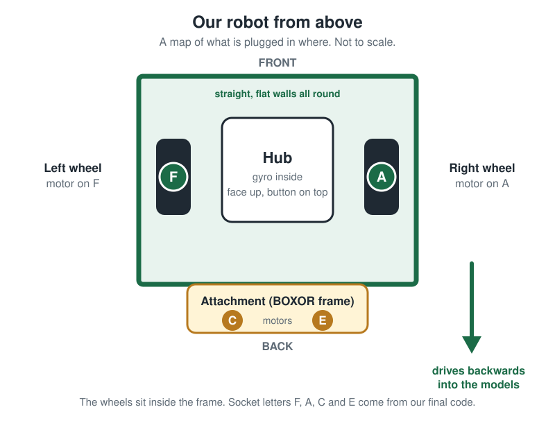
| Socket | What is plugged in |
|---|---|
| F | Left wheel motor |
| A | Right wheel motor |
| C | Attachment motor (attachment1) |
| E | Attachment motor (attachment2) |
Part 3 · A good ITERATE story
confirmed :D next to socket E in Phase 5.py.A mistake, a test, and a fix. Judges want to hear stories like this one.
Part 3 · How the robot finds its way
A sensor inside the hub. It knows which way the robot is pointing.
They count how far each wheel has turned, so the robot knows how far it has driven.
Our robot also had two colour sensors, which can follow the black lines on the mat. On 20 September the team decided not to use them, and that code was removed.
The downside: the gyro fixes which way the robot points, but nothing fixes how far it has gone. That is why the robot sometimes backs gently into a wall to square up.
Part 3 · Say it to a judge
Part 3 · Check yourself
F (left) and A (right). On 20 September the robot stopped with an error until the code used F and A.
The gyro and the motor encoders. The team stopped using the colour sensors on 20 September.
Any two of these: the frame touches walls and models, not the wheels. The wheels can't knock a model over. Each wheel is held on both sides, so it can't bend in.
To square up. The gyro fixes the direction, but nothing fixes how far the robot has gone.
4
Part 4 · CREATE
Attachments are the parts we add to the driving base to do the missions, like arms that push, lift or pull.
Part 4 · The BOXOR frame

The tan gears near the bottom are the bevel gears.
Our attachment frame comes from a published design, the BOXOR Frame Attachment.
Part 4 · Using someone else's design
The CREATE row says "original designs or improved on existing ones". So we never say "we made it all up ourselves".
Part 4 · Gravity mounting
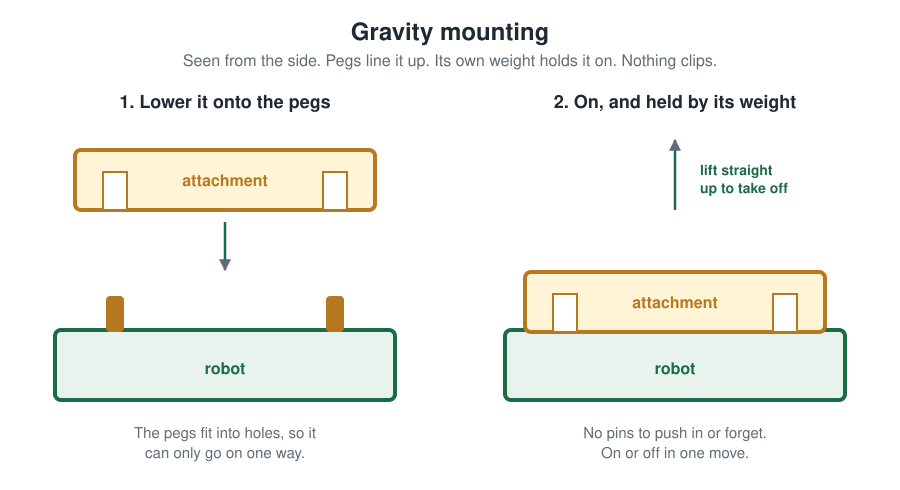
The match clock keeps running while we swap in base. Every second spent swapping is a second the robot is not scoring.
Part 4 · Where it goes
That is why the robot drives backwards into most models, and why so many distances in the code have a minus sign, like drive_cm(-44).
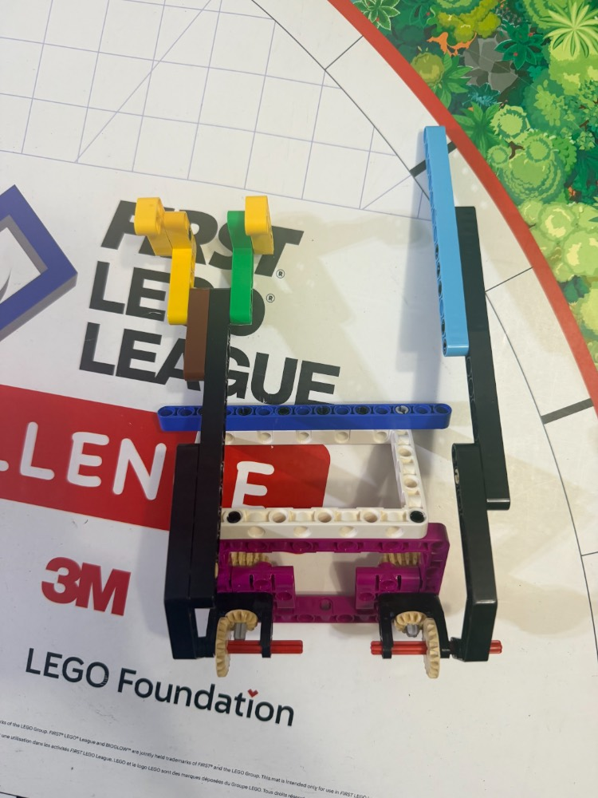
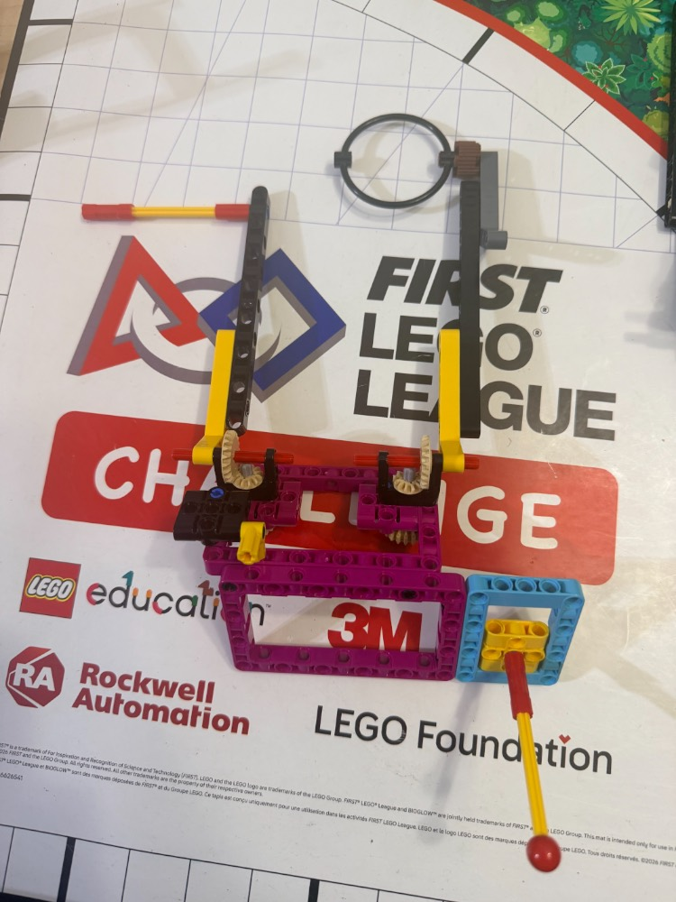
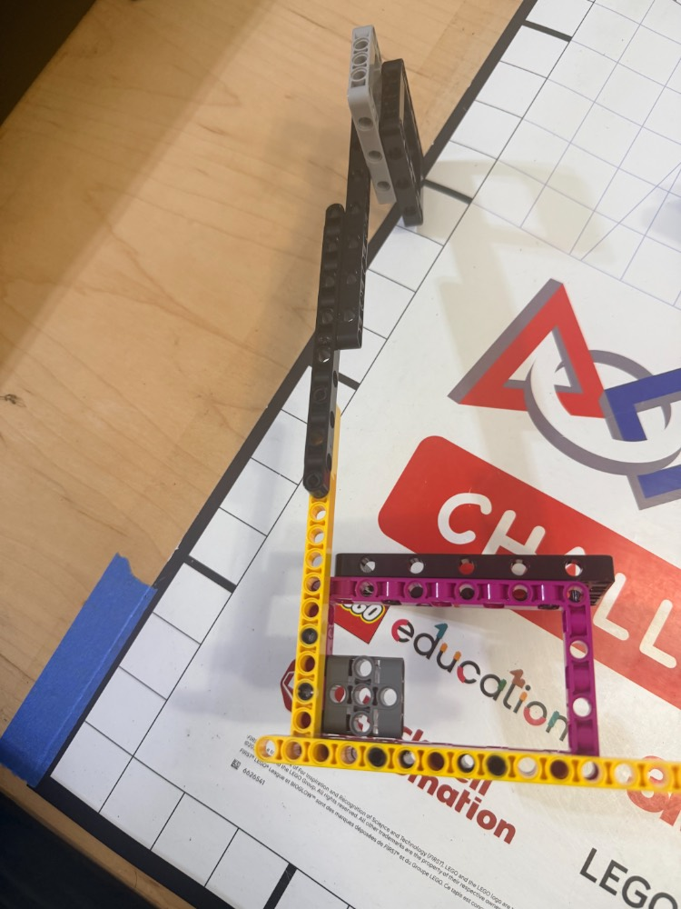
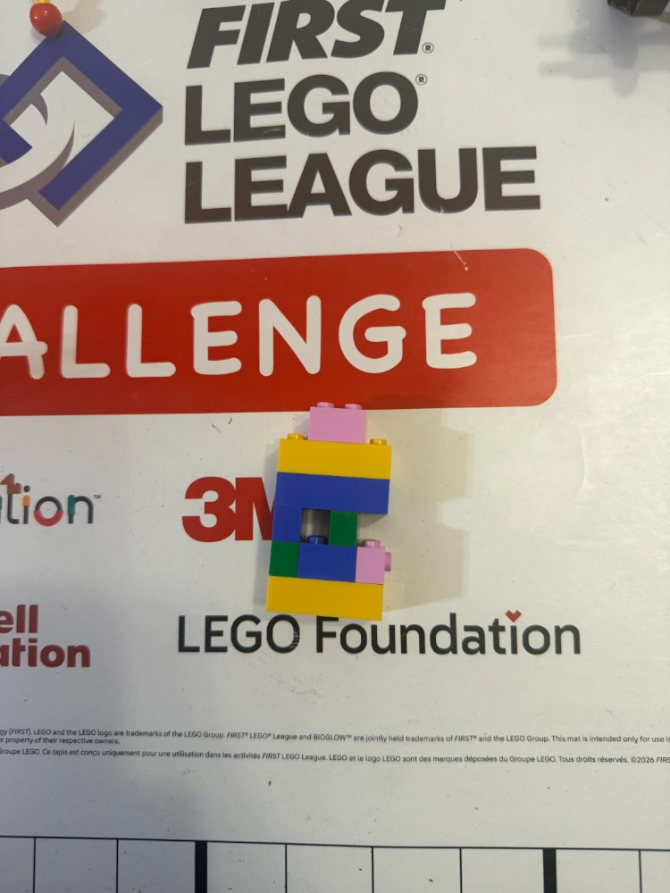
Four of the 11 photos of our final attachments, taken on 8 November. Which mission is each one for?
Part 4 · Say it to a judge
Part 4 · Check yourself
Turns the movement through 90 degrees, so the motor can swing an arm.
Its own weight. Pegs line it up. Nothing clips or pins it.
The attachment is on the back, so the robot drives backwards into most models.
"We started from a published design, the BOXOR frame, and this is what we changed." The rubric says "improved on existing ones" is fine.
5
Part 5 · CREATE
Why we use Python, what our library is, and the four commands every run uses.
Part 5 · Why Python
At the start of the season we used Word Blocks, the drag-and-drop blocks in the SPIKE app. Then we moved to Python, which is typed code.
Last year's team left us good Python code to start from.
With Python, git shows exactly which line changed, and when.
Part 5 · Our library
A library is a set of commands we wrote once and use in every program. Ours started as a copy of a Word Blocks library called "Advanced Coding 26".
11 bugs
When the team turned the blocks into Python, they found eight just by reading the blocks, and three more by testing on the robot. They fixed all eleven.
Part 5 · The main commands
| Command | What it does |
|---|---|
init_robot(default_speed=500) | Starts the program. It resets the gyro to zero, so the way the robot points at the start becomes "base". |
drive_cm(30) | Drives 30 cm forwards. It speeds up gently, slows down gently, and uses the gyro to stay straight. drive_cm(-30) drives backwards. |
face(90) | Turns until the robot points 90 degrees away from base. |
motor.run_for_degrees(attachment2, -380, 1000) | Turns an attachment motor 380 degrees backwards, at speed 1000. |
Part 5 · Measuring the real robot
Word Blocks used millimetres. Our Python uses centimetres. So .Forward 300 in blocks is the same as drive_cm(30) in Python.
set_calibration_scale(179/180)We asked the robot to drive 180 cm, and it drove 179 cm. This line fixes every distance to match our real robot. That is what calibration means: measure the real robot, then change the code to match.
Part 5 · Check yourself
drive_cm(30) drive?
30 cm. Word Blocks used millimetres, so .Forward 300 in blocks is drive_cm(30).
set_calibration_scale(179/180)?
On our mat the robot drove 179 cm when asked for 180, so every distance is adjusted to match.
init_robot do to the gyro, and why does that matter?
It resets the gyro to zero. The way the robot points at the start becomes "base", and every face turn is measured from base.
Pi was 3.146 instead of 3.14159. Or: the line-following blocks could wait for a line forever.
6
Part 6 · CREATE
Most teams can say "we used the gyro". Fewer can show how their code uses it, and why it is built that way. This part is how we do that.
Part 6 · Layers

await drive_cm(-44), then await face(90).We write the hard part once. We fixed the turns so they check again after braking, and every turn in every run got more accurate at once.
Part 6 · Getting the library onto the robot
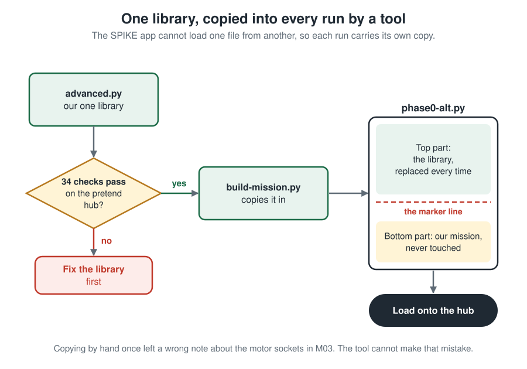
The problem. The SPIKE app runs one file at a time, and one file cannot load another. So every run needs its own copy of the library.
Copying by hand goes wrong. One file once said the drive motors were on "A (left), E (right)". The code below it used F and A.
Our fix. tools/build-mission.py copies the library in, above a marker line. It never touches the mission below:
# ===== MISSION CODE BELOW. THE GENERATOR DOES NOT TOUCH THIS =====
Part 6 · Driving straight
drive_cm does, step by step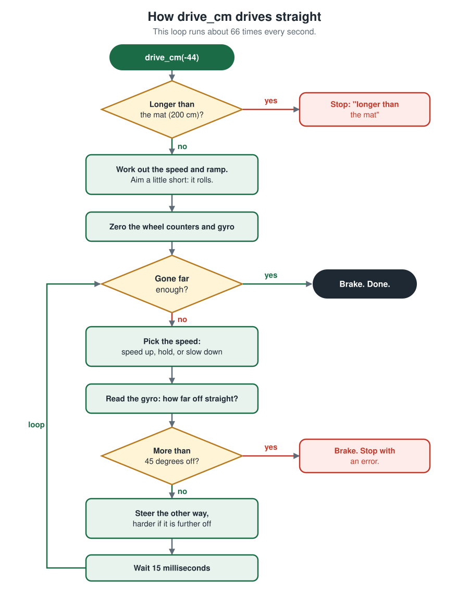
Part 6 · Driving straight
Drift a little left, steer a little right. Drift a lot, steer more. drive_cm does this about 66 times every second. These two lines do it:
error = _wrap180(_yaw_cw()) trim = -(kp * error + kd * (error - last_error))
errorHow far the robot is off straight, in degrees.
kp * errorSteers back. The further off it is, the harder it steers.
kd * (error - last_error)Looks at how fast the error is changing, and calms the steering, so the robot doesn't wiggle.
The minus sign at the front makes it steer against the mistake. A comment in our code says that without it, "the robot spirals instead of driving".
Part 6 · Driving straight
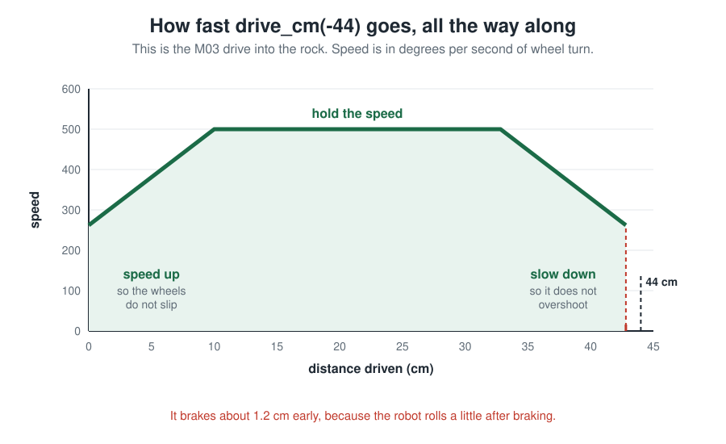
This is called a ramp.
Part 6 · Turning exactly
face
Imagine you turn, and you are one degree off. If the next turn starts from there, you are still one degree off, and the mistakes add up.
face always measures from base, the way the robot pointed at the start. A small mistake in one turn is not passed on to the next.
Round a square with face: about 1 degree off. Without it: 17 degrees off.
Part 6 · Turning exactly
face: P, I and D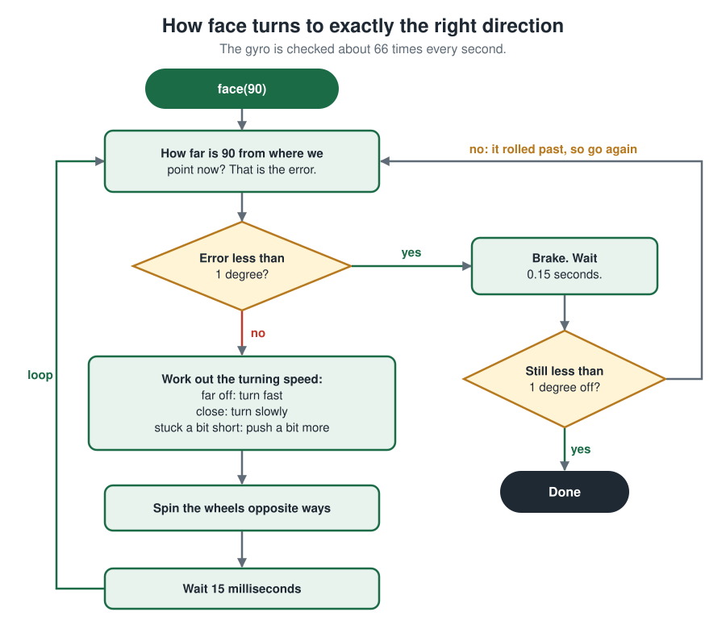
face works out the turning speed in three parts. Grown-ups call this PID.
| Part | What it does |
|---|---|
| P: Proportional | Far from the target: turn fast. Close: turn slowly. |
| I: Integral | Stuck a little short for a while? Push a little more. |
| D: Derivative | Closing in fast? Ease off, so it doesn't swing past. |
Part 6 · Turning exactly
Below 126, the wheels just buzz and don't move. So the turn always pushes at least that hard. In the library it is TURN_MIN = 126.
Our robot rolls about 2.4 degrees after the brakes go on. So face waits 0.15 seconds, looks at the gyro again, and fixes the roll. It can do this up to two more times.
Part 6 · Measure, then decide
The old turn just counted how far the wheels turned. The team timed and measured both:
| Time | How far off | |
|---|---|---|
| Old turn (counting wheels) | 1.54 seconds | 4.26 degrees |
| Gyro turn | 1.18 seconds | 0.58 degrees |
The gyro turn was faster and more accurate, so we deleted the old one. We decided with numbers, not opinions.
Part 6 · Two gyro bugs we found
YAW_SIGN = -1 (20 September)This line tells the code which way the gyro counts. Ours counts up when the robot turns anticlockwise. We found out when drive_cm(-44) should have driven backwards, but the robot spun round on the spot. The Word Blocks had it the wrong way round.
When the gyro goes past 180, it jumps to -179. Some turns spun for 30 seconds. The fix squashes every angle into -180 to 180:
def _wrap180(a):
"""Squash any angle into -180 to 180,
so 350 becomes -10."""
return (a + 180.0) % 360.0 - 180.0
Part 6 · Doing two things at once
awaitawait means "wait until this is finished before going on". Leave it out, and the robot starts that action and goes straight on to the next line. This is the end of phase0-alt.py:
await motor.run_for_degrees(attachment2, 200, 1000) # lift the arm, and wait motor.run_for_degrees(attachment2, 180, 1100) # start lifting more, don't wait await drive_cm(35, velocity=1100) # drive home while the arm moves
The arm finishes lifting while the robot drives home. phase3.py does the same. A match is only 2 minutes 30 seconds, so every second counts.
await.Part 6 · A whole run as a flowchart
phase0-alt.py without reading any code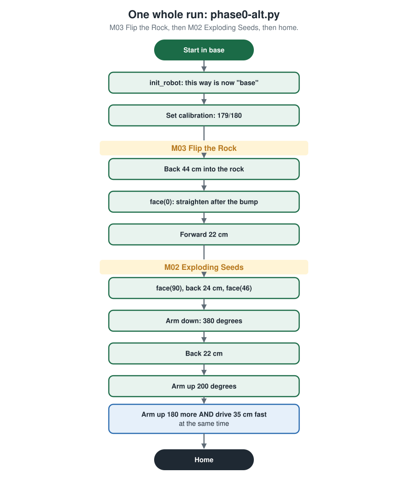
A flowchart lets a judge see a whole run without reading code. Draw it before you write the code, and the code is easier to write.
Part 6 · Your turn
Phase 6.pyThis is the Keystone Species run, the shortest one. Write one step on each line, in words. Then open the answer.
await drive_cm (-75, 1100) await face (44) await motor.run_for_degrees(port.E,-220,1100) await face (0) await drive_cm (75,1100)
Start in base. Drive 75 cm backwards. Turn to face 44 degrees from base. Turn the arm on socket E 220 degrees backwards: that does M13 Keystone Species. Turn back to face 0, the way we started. Drive 75 cm forwards, back to base. End.
Part 6 · Safety stops
A robot that goes wrong in a match can knock over models and lose points. So our code stops early.
| What goes wrong | What the code does | Why we added it |
|---|---|---|
| A distance longer than the mat (200 cm) | Refuses, and says ".Forward 300 is drive_cm(30)" | Word Blocks use millimetres. Copying 300 across would ask for 3 metres. |
| A straight drive gets more than 45 degrees off | Brakes, and stops with an error | On 20 September a wrong setting made the robot spin on the spot, right off the table. |
| A turn gets further from its target | Brakes, and stops with an error | It is turning the wrong way. |
| A drive or turn takes more than 8 seconds | Gives up and goes on | The robot is stuck. Waiting wastes match time. |
Part 6 · How we test our code
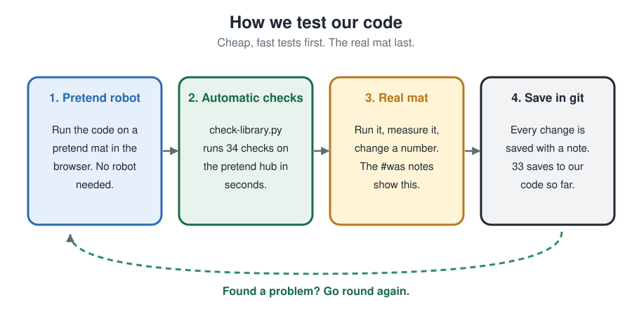
tools/check-library.py runs 34 checks in a few seconds. One checks that "a wrong YAW_SIGN stops instead of spinning".Part 6 · Check yourself
advanced.py, do?
Says how to do each move: speed up, steer with the gyro, stop on the mark. The run programs say what to do.
The SPIKE app cannot load one file from another. build-mission.py copies it in above the marker line.
drive_cm, the robot drifts 5 degrees to the left. What does the code do?
Steers back to the right. The further off it is, the harder it steers. It only stops if it gets more than 45 degrees off.
face check the gyro again after braking?
The robot rolls about 2.4 degrees after braking. face waits 0.15 seconds, looks again, and fixes it.
await before an arm command?
The arm starts moving and the next line starts at once, so both happen together.
YAW_SIGN = -1 tell the code?
Which way the gyro counts when the robot turns. Ours counts up when it turns anticlockwise.
7
Part 7 · IDENTIFY
A run is one trip from base onto the field and back. Our final programs are in code/Phases/Final/.
Part 7 · Our runs
| Program | What it does |
|---|---|
phase0.py and phase0-alt.py | M03 Flip the Rock: backs 44 cm into the rock. Then M02 Exploding Seeds: turns, backs up, and uses the attachment. phase0-alt.py also straightens up after hitting the rock. |
phase1.py and phase2.py | Right now these are copies of phase0-alt.py. Ask the coach. |
phase3.py | Turns to face "the root", lowers the attachment, and drives back while lifting it: M05 Reaching Roots. Then it drives across to the right side. |
Phase 5.py | Four jobs in one run: "Pull", "open door", "ant" and "Tree support". Then back to base. |
Phase 6.py | M13 Keystone Species, then back to base. |
Part 7 · Choosing missions
FIRST says pick missions that:
phase0.py notes say "Missions 3, 2 and 1", but the code only does 3 and 2. Does the robot also do M01 Drone Survey?Part 7 · Check yourself
phase0-alt.py do, in which order?
M03 Flip the Rock first, then M02 Exploding Seeds.
Phase 6.py do?
M13 Keystone Species.
phase3.py do?
M05 Reaching Roots.
Numbers: points, time, or risk. "It was only 10 points and took 40 seconds" beats "it was too hard".
8
Part 8 · ITERATE
The ITERATE row wants to see that we tested, found problems, and fixed them. Git keeps a record of every change, so we can see our story.
Part 8 · Our season
| When | What happened |
|---|---|
| 13 Sep | Fixed the wrong sockets in the code. Found our pretend mat on the computer was 236 cm wide, but the real mat is 200 cm. |
| 20 Sep | Found the gyro counted the other way (YAW_SIGN). Found the wheel motors were on F and A. Stopped using the colour sensors. |
| 26 Sep | Fixed a bug when the gyro goes past 180. It jumps to -179, and some turns spun for 30 seconds. |
| 10 to 11 Oct | Wrote the first run programs. Fixed the curved turn, then tuned the paths. |
| 25 to 31 Oct | Wrote programs for the right side of the field, including Keystone Species. |
| 1 Nov | Wrote the first versions of the final programs. |
| 7 to 13 Nov | Tuned the final programs. |
Part 8 · Tuning you can see
#was is a test that changed a numberLots of lines in our code have a note like #was 60. Each one is a number someone changed after a test run. Some from Phase 5.py:
await drive_cm(14) #was 12 await face(-62) #was 60 await drive_cm(-28) #was 30 motor.run_for_degrees(port.C,360,1000) #was 350
#was line. Who changed it, and what went wrong before?Part 8 · A fix from testing

In M03, the robot backs into the rock. The bump knocks it a little crooked. So phase0-alt.py adds await face(0) right after the bump, to straighten up.
The note in the code says "Straighten post collision before backing off for accuracy".
We tested, found a problem, and fixed it. That is exactly what ITERATE means.
Part 8 · What we still need
Our design log only has two entries, both from September. Everything since then is in git and in our memories. We will write it up at the brainstorm.
Part 8 · Check yourself
phase0-alt.py, why does the robot run face(0) straight after backing into the rock?
Hitting the rock knocks the robot crooked, so it straightens up before it drives on.
#was 60 note in our code tell a judge?
That someone tested the run, and changed that number from 60 after the test. It is evidence of repeated testing.
When the gyro goes past 180 it jumps to -179, and some turns spun for 30 seconds. We fixed it.
"8 out of 10". A number shows we measured.
9
Part 9 · COMMUNICATE
Knowing the robot is half of it. The other half is saying it clearly, in your own words.
Part 9 · Rules for the room
The judge will ask more if they want more.
"I don't know, but Kid 2 built that, and can tell you." A made-up answer falls apart at the next question.
Judges score iterating. A problem we fixed is worth more than a story with no problems.
The rubric asks about all team members. One person answering everything costs points, however good the answers are.
Part 9 · Weak or strong?
"How do you make it drive straight?"
"How do you get consistent turns?"
Part 9 · Weak or strong?
"What happens if something goes wrong?"
"How do you know your code works?"
Part 9 · Your turn
Everyone writes their own. Read them out. Which one would a judge remember?
"It's a box-shaped base that squares up on walls, with attachments that drop on by gravity. It steers with the gyro and measures every turn from where it started, so mistakes don't add up. We tested every run again and again, and every #was in our code is a fix from a test."
Don't learn the example by heart. Learn why it is strong: it says what is clever, how it works, and how we tested it.
For the brainstorm
The knowledge base cannot answer these. Only we can. Write your answer down, and say "I don't know" if that is true.
Phase 5.py jobs.Next
The robot that scores is not the cleverest one. It is the one that does the same thing every time, and a team where all five can explain why.